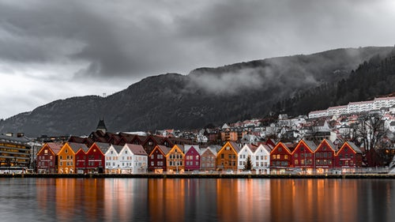

Много людей задумываются об иммиграции в какие-либо государства. Основной поток граждан России уезжает в страны Европы и Америки. Но некоторые предпочитают страны для миграции - страны Скандинавии, так как считают их наиболее благополучными и привлекательными. На этом сайте Вам представлены краткие характеристики стран Скандинавского полуострова, а также способы получения гражданства в данных странах. |
 |
Вся информация взята с этого сайта, авторские права которого были соблюдены.